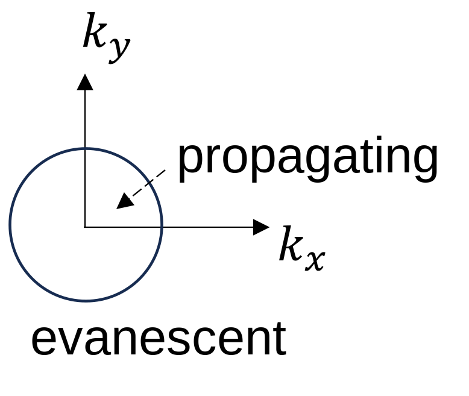
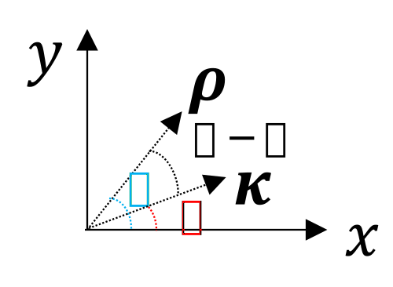

Contents:
We begin by discussing the time transform. Fourier transforms are linear operations and hence lend themselve to problems that are linear. The temporal Fourier transform (FT) pair is given by \begin{align} X(\omega) &= \FTt\{x(t)\} = \int_{-\infty}^{\infty} x(t) e^{i\omega t} dt\\ x(t) &= \IFTt \{X(\omega)\} = \frac{1}{2\pi} \int_{-\infty}^{\infty} X(\omega) e^{-i\omega t} d\omega \end{align} The response of a linear system is illustrated schematically below: \begin{align*} x(t) \xrightarrow{\FTt\{x(t)\}} X(\omega) \xrightarrow{H(\omega) X(\omega)} Y(\omega)\xrightarrow{\IFTt\{Y(\omega)\}} y(t)\,, \end{align*} where \(H(\omega)\) is the so-called transfer function.
I find it helpful to remember that "\(\mathcal{F}\)" (\(\texttt{\mathcal{F}}\) in LaTeX) corresponds to the operator \(\int_{-\infty}^\infty \dots dt\), while an upper case letter corresponds to the transformed lower case function.
As a sneak-peek for what is to come, we outline (informally) how use the Fourier transform (both temporal and spatial, discussed further in the following sections) to propagate from position \(x,y,z=z_0\) to a parallel plane \(x,y,z=z_0 + \Delta z\) following the general "recipe" provided above.
First take the Fourier time transform \(\FTt\) to obtain \(p_\omega\): \begin{align*} p(x,y,z,t_0) \xrightarrow{\FTt\{p(x,y,z,t_0)\}} p_\omega(\omega,x,y,z_0)\,. \end{align*} Then take the 2D spatial Fourier transform to obtain \(P_\omega(k_x,k_y,z_0)\) (note capital letters are used for quantities in \(k\)-space): \begin{align*} p_\omega(\omega,x,y,z_0)\xrightarrow{\FTxy\{p_\omega(x,y,z_0)\}} P_\omega(k_x,k_y,z_0) \,. \end{align*} Next, apply the transfer function to \(P_\omega(k_x,k_y,z_0)\) to advance spatially. \begin{align*} P_\omega(k_x,k_y,z_0) \xrightarrow{H(k_x,k_y) P_\omega(k_x,k_y,z_0)} P_\omega(k_x,k_y,z_0 + \Delta z) \,. \end{align*} Finally, take the inverse 2D spatial FT to return from \(k\)-space to physical space. \begin{align*} P_\omega(k_x,k_y,z_0 + \Delta z)\xrightarrow{\IFTxy \{P_\omega(k_x,k_y,z_0 + \Delta z)\}} p_\omega(x,y,z+\Delta z)\,. \end{align*} The above step shall be the stopping point in this class (since we will work largely in \(k\)-space, i.e., our interest is in solving the Helmholtz equation, not the wave equation). If desired, however, one can take the inverse time Fourier transform, viz., \(\IFTt\{p_\omega(x,y,z+\Delta z)\}\) to obtain \(p(x,y,z+\Delta z,t)\).
What is the transfer function? We will find that \[H(k_x,k_y) = e^{ik_z\Delta z},\quad k_z = \sqrt{\frac{\omega^2}{c_0^2} - k_x^2 - k_y^2}\,.\]
How should one correctly interpret \(p_\omega\) in the equations above? We will represent the time dependence as \begin{align*} p(\vec{r},t) = p_\omega (\vec{r}) e^{-i\omega t} = |p_\omega(r)| e^{i\phi_\omega(\vec{r})} e^{-i\omega t} \end{align*} and interpret \(|p_\omega(\vec{r})|\) as the peak pressure of \(p(t)\).Do not try to identify \(p_\omega\) from \(P_\omega\), as illustrated in the following example: Consider the pressure wave \(p(t)=p_0\cos\omega_0t\). Since there is no spatial dependence, \(p_\omega\) should be identified as \(p_0\). Meanwhile, the time FT is \begin{align*} \FTt \{p_0\cos\omega_0t\}&= \int_{-\infty}^{\infty} p_0\frac{e^{i\omega_0 t} + e^{-i\omega_0 t} }{2} e^{i\omega t} dt\\ &= \frac{p_0}{2}\int_{-\infty}^{\infty} (e^{i\omega_0 t} + e^{-i\omega_0 t}) e^{i\omega t} dt\\ &= \pi p_0 [\delta(\omega+\omega_0) + \delta(\omega-\omega_0)]\,, \end{align*} where one might be tempted to define \(p_\omega \) as \(\pi p_0\).
For this discussion, consider the 1D spatial Fourier transform: \begin{align} F(k_x) &= \mathcal{F}_x \{f(x)\} = \int_{-\infty}^{\infty} f(x)e^{-ik_xx}dx \label{F}\tag{1}\\ f(x) &= \mathcal{F}_x^{-1} \{F(k_x)\} = \frac{1}{2\pi}\int_{-\infty}^{\infty} F(k_x)e^{ik_xx}dk_x\,. \label{f}\tag{2} \end{align} The sign convention corresponds to the \(e^{-i\omega t}\) time dependence such that \begin{align*} f(x) e^{-i\omega t} = \frac{1}{2\pi} \int_{-\infty}^{\infty} F(k_x) e^{i(k_xx-\omega t)} dk_x \end{align*} is a forward-traveling wave.
Some authors, e.g., Goodman let \(k_x = 2\pi f_x\) such that the Fourier transforms are symmetric. \begin{align*} \mathcal{F}_x^G \{f(x)\} &= \int_{-\infty}^{\infty} f(x) e^{-i2\pi f_xx}dx \equiv F^G(k_x)\\ \mathcal{F}_x^{-1,G} \{F(k_x)\} &= \int_{-\infty}^{\infty} F^G(k_x) e^{i2\pi f_xx}df_x\,, \end{align*} where \(dk_x = 2\pi df_x\). We will avoid this in favour of Eqs. Eqs. \eqref{F} and \eqref{f}. Simply beware of these alternate definitions.
Many more properties of Eqs. \eqref{F} and \eqref{f} are given in Papoulis's table with the following substitutions: \begin{align*} t\mapsto x\\ \omega \mapsto k_x\\ j \mapsto i\,. \end{align*}
The two-dimensional (2D) spatial FT will prove to be useful: \begin{align*} F(k_x,k_y) &= \FTxy \{f(x,y)\} = \iint_{-\infty}^\infty f(x,y) e^{-i(k_xx+ k_yy)}dxdy\\ f(x,y) &= \IFTxy \{F(k_x,k_y)\} = \frac{1}{4\pi^2}\iint_{-\infty}^\infty F(k_x,k_y) e^{i(k_xx+ k_yy)}dk_xdk_y \end{align*} Wavenumber space is sometimes referred to as "\(k\)-space." Note that \(k\)-space itself arises in the first place from taking a time FT (of the wave equation). Beware of the different sign conventions used in physics and engineering.
In class, the "\(xy\)" subscripts of \(\mathcal{F}\) were dropped for convenience, but I shall retain them in the online notes for clarity. \begin{align*} F(k_x,k_y) &= \FTxy \{f(x,y)\} = \iint_{-\infty}^\infty f(x,y) e^{-i(k_xx + k_yy)} dx dy\\ f(x,y) &= \IFTxy \{F(k_x,k_y)\} = \frac{1}{4\pi^2}\iint_{-\infty}^\infty F(k_x,k_y) e^{i(k_xx + k_yy)} dx dy \end{align*} Note that the operators commute: \begin{align*} \FTxy\{f(x,y)\} &= \mathcal{F}_y\{\mathcal{F}_x [f(x,y)]\}\\ &= \mathcal{F}_x\{\mathcal{F}_y [f(x,y)]\}\,, \end{align*} and if \(f(x,y) = g(x)h(y)\) then \(\mathcal{F}\{f(x,y)\} = G(k_x)H(k_y)\).
Finally, note that a vectorial form of the 2D spatial Fourier transform is often utilized. Let \begin{align*} \rho &= (x,y) = x\hat{e}_x + y\hat{e}_y\\ \vec{\kappa} &= (k_x,k_y) = k_x\ex + k_y\ey\,, \end{align*} so \(\vec{\rho}\cdot\vec{\kappa} = k_xx + k_yy\). Then the 2D spatial Fourier transform pair reads \begin{align*} F(\vec{\kappa}) &= \int f(\vec{\rho})e^{-i\vec{\kappa}\cdot\vec{\rho}} d\vec{\rho}\\ f(\vec{\rho}) &= \int F(\vec{\kappa})e^{i\vec{\kappa}\cdot\vec{\rho}} d\vec{\kappa}\,. \end{align*}
The different uses of the letter "f" might be confusing. To reiterate: \(F\) refers to the transformed "version" of \(f\), whereas \(\mathcal{F}\) is the integral transformation. It helps to loosely think, "\(f\) is the uncooked meal, \(F\) is the cooked meal, and \(\mathcal{F}\) is the microwave."
A full list of some transformation theorems is provided here. Some will be proven as homework problems. The theorems in that document are in terms of the 2D spatial Fourier transform. Here, we prove two theorems for the 1D spatial Fourier transform relating to similarity and differentiation. They can straightforwardly generalized to the 2D case.
If \(\mathcal{F}_x\{f(x)\} = F(k_x)\), then what is \(\mathcal{F}_x \{f(ax)\}\)? To find out, we simply apply the definition of the 1D spatial Fourier transform: \begin{align*} \mathcal{F}_x \{f(ax)\} &= \int_{-\infty}^{\infty} f(ax) e^{-ik_xx}dx\\ \end{align*} To evaluate the integral, the substitution \(u = ax\) (and hence \(dx = du/a\)) is used. Note that the sign of \(a\) determines which integral is to be taken: \begin{align*} \mathcal{F}_x \{f(ax)\} &=\begin{cases} \int_{-\infty}^{\infty} f(u) e^{-ik_xu/a}\frac{du}{a},\quad &a > 0\\ \int_{\infty}^{-\infty} f(u) e^{-ik_xu/a}\frac{du}{a},\quad &a < 0 \end{cases} \end{align*} To eliminate the conditional statement above, simply consider the magnitude of \(a\): \begin{align*} \mathcal{F}_x \{f(ax)\} &= \int_{-\infty}^{\infty} f(u) e^{-ik_xu/a}\frac{du}{|a|},\quad \forall a\\ &= \frac{1}{|a|}\int_{-\infty}^{\infty} f(u) e^{-ik_xu/a}\,du\,. \end{align*} Recalling Eq. \eqref{F}, \(F(k_x) = \mathcal{F}_x \{f(x)\} = \int_{-\infty}^{\infty} f(x)e^{-i k_x x }dx\), the integral above is identified as \(F(k_x/a)\). This is done by corresponding \(u\) above as \(x\) in Eq. \eqref{F}, and corresponding \(k_x/a\) above as \(k_x\) in Eq. \eqref{F}. Thus, \[\mathcal{F}_x\{ f(ax)\} = \frac{1}{|a|} F(k_x/a)\,. \]
In particular, let us consider the Fourier transform of the \(n^\text{th}\) derivative of \(f(x)\): \begin{align*} \mathcal{F}_x \bigg\{ \frac{\partial^n}{\partial x^n} f(x) \bigg\}\,, \end{align*} which we can write as \[\mathcal{F}_x \bigg\{ \frac{\partial^n}{\partial x^n} \mathcal{F}_x^{-1}[F(k_x)] \bigg\}\] because \(\mathcal{F}_x^{-1}[F(k_x)] = f(x)\). Invoking Eq. \eqref{f}, the Fourier transform is written explicitly: \begin{align*} \mathcal{F}_x \bigg\{ \frac{\partial^n}{\partial x^n} f(x) \bigg\} &= \mathcal{F}_x \bigg\{ \frac{\partial^n}{\partial x^n} \frac{1}{2\pi}\int_{-\infty}^{\infty}[F(k_x)]e^{ik_xx} dk_x \bigg\} \\ \end{align*} The derivative is brought inside the integral, and the integrand is evaluated: \begin{align*} \mathcal{F}_x \bigg\{ \frac{\partial^n}{\partial x^n} f(x) \bigg\} &= \mathcal{F}_x \bigg\{\frac{1}{2\pi}\int_{-\infty}^{\infty} (ik_x)^n F(k_x)e^{ik_xx} dk_x \bigg\} \end{align*} Again by Eq. \eqref{f}, the inverse spatial Fourier transform is identified: \[\mathcal{F}_x \bigg\{ \frac{\partial^n}{\partial x^n} f(x) \bigg\} = \mathcal{F}_x \{\mathcal{F}_x^{-1} [(ik_x)^n F(k_x)]\} \] Since the forward and inverse transform are inverses, we obtain \[\mathcal{F}_x \bigg\{ \frac{\partial^n}{\partial x^n} f(x) \bigg\} = (ik_x)^n F(k_x)\,.\]
Define \begin{align*} \tri(x) = \Lambda(x) \equiv \begin{cases} 1-|x|\,,\quad & |x|\leq 1\\ 0\,, \quad & |x| >1 \end{cases}\,. \end{align*}
In this example, we evaluate the Fourier transform of the function \begin{align*} f(x) = A \Lambda(x/L) \end{align*} rather cleverly. We will use the derivative theorem to obtain the Fourier transform of this function (rather than take the FT directly). In particular, the derivative of \(f(x) = A \Lambda(x/L) \) is \begin{align*} f'(x) &= \frac{A}{L}\bigg[\rect \bigg(\frac{x+ L/2}{L}\bigg) - \rect \bigg(\frac{x- L/2}{L}\bigg) \bigg]\,. \end{align*}
Earlier, we found that the Fourier transform of the rectangle function is \begin{align*} \mathcal{F}_x\bigg\{ \rect \frac{x}{L}\bigg\} &= L \frac{\sin(k_xL/2)}{k_xL/2}\,. \end{align*} The shifting property is used (which will be proved as a homework problem): \begin{align*} \mathcal{F}_x \{ f(x-a)\} &= F(k_x) e^{-ik_xa}\,. \end{align*} So the Fourier transform of the derivative of the triangle function is \begin{align*} \mathcal{F}_x \{f'(x)\} &= A \frac{\sin(k_xL/2)}{k_xL/2} (e^{ik_xL/2} - e^{-ik_xL/2})\,. \end{align*} But \(e^{ik_xL/2} - e^{-ik_xL/2} = 2i \sin (k_xL/2)\). So we have (after normalization) \begin{align*} \mathcal{F}_x \{f'(x)\} &= ik_x AL \bigg[\frac{\sin(k_xL/2)}{k_xL/2} \bigg]^2\,. \end{align*} However, this is the Fourier transform of the derivative of the triangle function. Using the derivative theorem for \(n= 1\), \begin{align*} \mathcal{F}_x\bigg\{ \frac{\partial }{\partial x} f(x)\bigg\} = ik_x F(k_x)\,, \end{align*} we obtain the 1D spatial Fourier transform of the triangle function: \begin{align*} F(k_x) = \mathcal{F}_x\{f(x)\} = AL\bigg[\frac{\sin(k_xL/2)}{k_xL/2} \bigg]^2\,. \end{align*} As a sanity check, evaluate the FT at the origin of \(k\)-space and see if we obtain the area under \(f(x)\). Indeed, \(F(k_x) = AL\), which is indeed the area under the triangle function.The above discussion has been purely mathematical. Now let us apply this mathematics to the study of wave phenomena. Consider a time-harmonic acoustic pressure field: \begin{align*} p(x,y,z,t) &= p_\omega(x,y,z) e^{-i\omega t}\,. \end{align*} Thus the wave equation becomes \begin{align} \Laplacian p_\omega + k^2 p_\omega = 0\,. \label{Helm}\tag{1} \end{align} Let \(p_\omega\) be an arbitrary field propagating in the \(+z\) direction. At a given instant, it passes through the plane \(z = 0\).
Let us characterize the field in the plane \(z =0\) as \begin{align*} p_\omega (x,y,0) = p_0(x,y)\,. \end{align*} The 2D spatial Fourier transform of this source condition is \begin{align} P_0(k_x,k_y) = \iint_{-\infty}^\infty p_0(x,y) e^{-i(k_xx + k_yy)} dx dy\,, \label{angularspec}\tag{2} \end{align} so \begin{align} p_0(x,y) = \iint_{-\infty}^\infty P_0(k_x,k_y) e^{i(k_xx + k_yy)} dk_x dk_y\,. \label{angularspec'}\tag{3} \end{align} Note that a general plane-wave solution of Eq. \eqref{Helm} is \begin{align*} p_\omega(x,y,z) = Ae^{i(k_xx + k_yy + k_zz)} = A e^{i\vec{k}\cdot \vec{r}}\,, \end{align*} where \(k = k_x\ex + k_y\ey + k_z\ez\) and \(|\vec{k}| = \omega/c_0\). Thus \begin{align*} k_z = \sqrt{k^2 -k_x^2 - k_y^2}\,. \end{align*} Thus Eq. \eqref{angularspec'} is a superposition of plane waves passing through the plane \(z = 0\) with complex amplitudes \begin{align*} A(k_x,k_y) = P_0(k_x,k_y) \frac{dk_x dk_y}{4\pi^2}\,. \end{align*} Each plane wave in the summation is uniquely determined by the pair \((k_x,k_y)\). Now write \begin{align*} \vec{k} &= k_x\ex + k_y\ey + k_z\ez\\ &= \vec{\kappa} + k_z \ez\,. \end{align*} Now we introduce spherical coordinates, where the meaning of the \(z\) axis is preserved between the Cartesian and spherical coordinates: \begin{alignat*}{2} k_x &= k\sin\gamma \cos \psi &&= \kappa \cos \psi\\ k_y &= k\sin\gamma \sin \psi && = \kappa \sin \psi\\ k_z &= k\cos \gamma\,, \end{alignat*} where \(\gamma \) is the polar angle in \(k\)-space, while \(\psi\) is the azimuthal angle in \(k\)-space.
I do not know what to label the axes in the figure above. In future sections, you will see that they are labeled \((x,y,z)\), which I abhor, because these are spatial coordinates with dimensions of length, while the vectors \(\vec{k}\) and \(\vec{\kappa}\) have dimensions of inverse length.
The ordered pair \((k_x,k_y)\) is uniquely defined by \((\psi,\gamma)\), and hence \begin{align*} P_0(k_x,k_y) &= \text{ angular spectrum} = P_0(\gamma,\psi)\,. \end{align*} Note that only components for which \(k_x^2 + k_y^2 < k^2\) can propagate. That is, outside a circle of radius \(|\vec{k}| = \omega/c_0\), the wave field is evanescent:

For axisymmetric cases, the Hankel transform (as apposed to the 2D spatial Fourier transform) proves to be useful.
Suppose \(f(x,y) = f(\sqrt{x^2 + y^2}) = f(\rho)\). Then, the 2D spatial Fourier transform becomes \begin{align*} \FTr \{f(\rho)\} &= \int_{0}^{2\pi}\!\!\int_{0}^{\infty} f(\rho) e^{-i\vec{\kappa} \cdot \vec{\rho}}\, \rho \, d\rho \, d\phi \end{align*} where sometimes the differential area element \(\rho \, d\rho\, d\phi\) is denoted \(d\vec{\rho}\). The relationship between \(\rho\) and \(\kappa\) is shown below:

Since \(\vec{\kappa}\) is fixed, we may align \(\vec{\kappa}\) along the \(x\)-axis (i.e., set \(\psi =0\)) for the case that \(f \neq f(\phi)\). Then \[\vec{\kappa}\cdot\vec{\rho} = \kappa \rho \cos \phi\,.\] and \begin{align*} \FTr \{f(\rho)\}&= \int_{0}^{\infty} f(\rho)\rho d\rho \int_{0}^{2\pi} e^{-ik\rho \cos\phi} d\phi\,, \end{align*} and the polar integral is an integral identity of the 0th order Bessel function, \(2\pi J_0(\kappa\rho)\). Thus the transform becomes \begin{align*} \FTr \{f(\rho)\}&= 2\pi\int_{0}^{\infty} f(\rho) J_0(\kappa\rho)\,\rho \,d\rho = F(\kappa) \end{align*} Define the Hankel transform: \begin{align} F_H(\kappa) &\equiv \HT\{f(\rho)\} = \int_{0}^{\infty} f(\rho) J_0(\kappa \rho) \,\rho \,d\rho \label{Hank}\tag{1} \end{align} Thus \begin{align}\label{relation}\tag{2} F(\kappa) &= 2\pi F_H(\kappa)\,, \end{align} which is a critical (and annoying) difference between the Fourier and Hankel transforms.Similarly, the inverse 2D spatial Fourier transform of an axisymmetric function \(k\)-space, \(F(\kappa)\), is \begin{align*} f(\rho) = \IFTr \{F(\kappa)\} = \frac{1}{4\pi^2} \iint F(\kappa) e^{i\vec{\kappa}\cdot \vec{\rho}}\, \kappa \,d\kappa \,d\psi \end{align*} Align \(\vec{\rho}\) with the \(k_x\) axis. Thus in this case \[\vec{\kappa} \cdot \vec{\rho} = \kappa \rho \cos \psi.\] So \begin{align*} f(\rho) &= \frac{1}{2\pi} \int_{0}^{\infty}F(\kappa)J_0(\kappa\rho)\kappa \, d\kappa\\ &= \int_{0}^{\infty}F_H(\kappa)J_0(\kappa\rho)\kappa \, d\kappa\,, \end{align*} where the second equality follows from Eq. \eqref{relation}. So \begin{align}\label{Hankinv}\tag{3} f(\rho) &= \IHT \{F_H(\kappa)\}= \int_{0}^{\infty} F_H(\kappa)J_0(\kappa \rho) \kappa d\kappa\,. \end{align} Eqs. \eqref{Hank} and \eqref{Hankinv} are standard definitions of forward and inverse Hankel transforms, related to Fourier transforms by Eq. \eqref{relation}.
One definition of the Dirac delta function is \begin{align}\label{delta}\tag{1} \int_{-\infty}^{\infty} f(x) \delta (x) dx = f(0)\,. \end{align} \(\delta(x)\) is a generalized function, also called a "functional," which is something that operates on an integrand. It can be thought of as an integral mapping from \(f(x)\) to \(f(0)\).
An alternative definition is two-fold: \begin{align} \delta(x)&=0,\quad x\neq 0\tag{2} \label{delta2}\\ \int_{-\infty}^{\infty} \delta(x) dx &= 1\,.\tag{3} \label{delta3} \end{align}
It will be of interest to represent a \(\delta\) function as a limit of an ordinary function \(\mu(x,\epsilon)\). \begin{align*} \delta(x) = \lim_{\epsilon\to 0} \mu(x,\epsilon)\,. \end{align*} To construct \(\mu(x,\epsilon)\), start with another function without an \(\epsilon\), \(\zeta(x)\), having unit area \begin{align*} \int_{-\infty}^{\infty} \zeta(x) dx = 1\,. \end{align*} Then let \begin{align*} \mu(x,\epsilon) &= \frac{1}{\epsilon} \zeta(x/\epsilon) \end{align*} Let us prove that \begin{align*} \delta(x) = \lim_{\epsilon\to 0} \mu(x,\epsilon) \end{align*} for an arbitrary \(\mu(x,\epsilon)\). Substituting \(\mu(x,\epsilon) = \frac{1}{\epsilon} \zeta(x/\epsilon)\) into the definition of the delta function given by Eq. \eqref{delta} gives \begin{align*} f(0) &= \int_{-\infty}^{\infty} f(x) \lim_{\epsilon\to 0} \mu(x,\epsilon) dx\\ &= \lim_{\epsilon\to 0}\int_{-\infty}^{\infty} f(x) \frac{1}{\epsilon} \zeta(x/\epsilon) dx\,. \end{align*} Now introduce a variable substitution \(x= \epsilon y\). Thus \(dx = \epsilon\, dy\). The limits remain unchanged (though there is a subtle point here): \begin{align*} f(0) &= \lim_{\epsilon\to 0}\int_{-\infty}^{\infty} f(\epsilon y) \frac{1}{\epsilon} \zeta(y) \epsilon dy\\ &= f(0)\int_{-\infty}^{\infty} \zeta(y) dy \end{align*} But since \(\int_{-\infty}^{\infty} \zeta(x) dx = 1\), the above is simply equal to \(f(0)\). Thus Eq. \eqref{delta} is satisfied.
Using the result of the previous example, the Fourier transform of the complex exponential can be taken rather cleverly. Start with the previous result, \(\delta(x) = \lim_{\epsilon\to 0}\frac{\sin(x/\epsilon)}{\pi x}\), write sine using complex exponentials (e.g., \(\sin a = (e^{ia}-e^{-ia})/2i\)), cleverly write \(e^{ix/\epsilon} - e^{-ix/\epsilon} = \int_{-1/\epsilon}^{1/\epsilon} ix e^{ik_xx}dk_x\), and take the limit: \begin{align*} \delta(x) &= \lim_{\epsilon\to 0}\frac{\sin(x/\epsilon)}{\pi x}\\ &= \lim_{\epsilon\to 0} \frac{1}{i2\pi x}(e^{ix/\epsilon} - e^{-ix/\epsilon})\\ &= \lim_{\epsilon\to 0} \frac{1}{i2\pi x} \int_{-1/\epsilon}^{1/\epsilon} ix e^{ik_xx}dk_x \\ &= \frac{1}{2\pi} \int_{-\infty}^{\infty} e^{ik_xx}dk_x \end{align*} Thus \begin{align*} \int_{-\infty}^{\infty} e^{ik_xx}dk_x &= 2\pi \delta(x)\,. \end{align*} (Alternatively, we have \(\int_{-\infty}^{\infty} e^{-ik_xx}dk_x = 2\pi \delta(x)\).) And for the dual space, \begin{align*} \int_{-\infty}^{\infty} e^{-ik_xx}dx &= 2\pi \delta(k_x)\,. \end{align*}